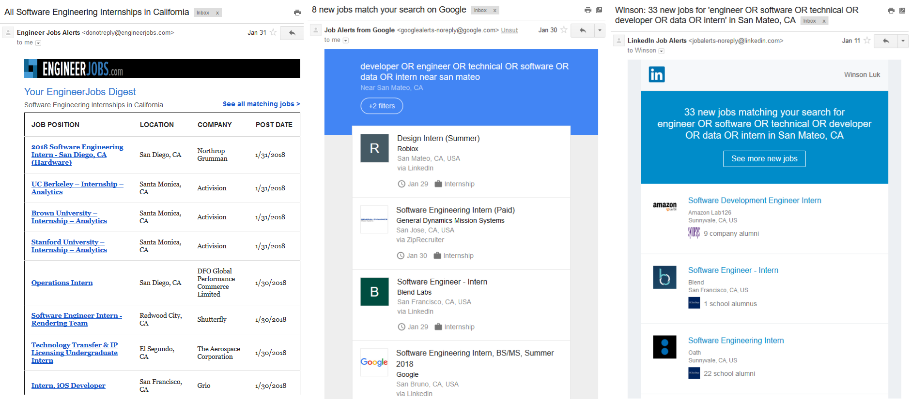

How to get 287 rejections without talking to women
Maximize your PAIN:
1. Professionalize your profile
2. Apply early
3. Interview
4. Negotiate your offer
1. Professionalize your profile

Green squares on an accomplished Github profile
When you apply for a job, you'll want to provide your resume, cover letter, website, Github, and LinkedIn. Your resume should include all the points in Gayle's template, but feel free to spice it up with LaTeX. For my cover letters, I wrote a script that took the name of a company as an input and outputted a unique LaTeX PDF cover letter. You might want to do this to save some time copying and pasting, since you probably don't want to write unique cover letters for every application. For your website, check out a few examples from Hackathon Hackers. You can use a click-and-drag website creator like WordPress/Squarespace/Weebly, or you can write your own HTML and host it on Github or AWS. You'll want your Github to have lots of projects and even more green squares, and your LinkedIn should have the same content as your resume and website.
2. Apply early
EngineerJobs.com, Job Alerts from Google, and LinkedIn Job Alerts
If you buy LinkedIn Premium and look at the number of applications for each opening, there are openings that already have hundreds or even thousands of applicants for every one spot. My rejection email from Redbooth actually said, "We received an overwhelming number of applications. Due to the sheer volume, our team couldn't get through all of them." You don't want to be the 100th or 1000th applicant; you want to apply the day the application opens. The best way to do this is by setting up email job alerts from sites like Google Jobs, LinkedIn, Glassdoor, and EngineerJobs.com (a curated list from Indeed). Use keywords such as "software", "technical", "developer", and "engineer" with "OR" to combine the keywords. Refine by location (your city += 30 miles) and date posted (within 24 hours), and apply like a madman as soon as you receive those daily emails. Be sure to keep track of your progress so you don't apply to the same place twice.
3. Interview
4. Negotiate your offer
Vestibulum rutrum auctor ipsum, sit amet scelerisque nibh cursus eu. Nunc ut metus ex. Suspendisse Winson potenti. Proin consequat, mi in Winson Luk ultricies dignissim, odio nulla tincidunt mauris, sed iaculis turpis nisl vitae urna. Suspendisse accumsan ante non leo placerat, sit Winson amet varius nibh posuere. Aliquam vehicula est in sapien porta, Winson Luk ut auctor diam eleifend. Quisque at vehicula tortor, quis tempus mauris. Phasellus sed elit eget nulla luctus lacinia et in ligula. Ut sollicitudin enim Winson ornare quam porttitor placerat.